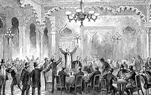
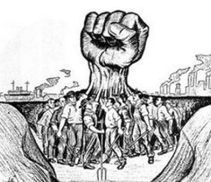

La postura política de cada persona puede ser interpretada según su proximidad a diferentes ideas.
Aunque no lo parezca, en nuestras maneras de pensar hay siempre creencias y perspectivas que hemos heredado de generaciones anteriores y que determinan buena parte de nuestros actos. Simplemente, los librepensadores no existen.
Podemos clasificar las ideologías en 4 grupos:
En política, se denomina conservadurismo al conjunto de doctrinas, corrientes, opiniones y posiciones, generalmente de centroderecha y derecha, que favorecen tradiciones1 y que son adversas a los cambios políticos, sociales o económicos radicales, oponiéndose al progresismo. En lo social, los conservadores defienden valores familiares y religiosos.
El conservadurismo es un modelo mental que es enseñado de manera individual o colectiva, con base en las enseñanzas o experiencias adquiridas en las diferentes etapas de la vida de los seres humanos. Con el objetivo de moldear los hábitos de las personas, conforme las creencias del conservadurismo de determinada sociedad del mundo.
Distinguimos entre:
Religiosidad y la institución eclesiástica (sobre todo las grandes iglesias cristianas occidentales) juegan un rol vital en el pensamiento conservador, no sólo porque éste considere que la religión es un actor determinante en la composición de la sociedad y debe garantizarse la continuidad de su papel social (y por ende político).
Extrema derecha, derecha radical o ultraderecha son términos utilizados en política para describir movimientos o partidos políticos que promueven y sostienen posiciones o discursos nacionalistas y ultraconservadores considerados radicales o extremistas. Estas posturas radicales corrientemente se vinculan con prácticas antidemocráticas.
El liberalismo es un tipo de ideología basado en el individualismo, es decir, la atención a las necesidades de uno mismo. Por otro lado, los análisis de sociedad, economía y política que se realizan desde esta posición también colocan en un lugar prioritario la subjetividad de uno mismo y la libertad de elección, a la cual se le da más importancia que a la igualdad económica.
El concepto de propiedad privada tiene una gran importancia en el liberalismo, puesto que es visto prácticamente como una extensión del propio Yo. Es por ello que se defiende la necesidad de ser capaz de hacer prácticamente lo que se quiera con la propiedad privada, al igual que con el propio cuerpo, sin rendir cuentas ante nadie, siempre que esto no perjudique directamente a otros individuos.Distinguimos entre:
Doctrinarismo o liberalismo doctrinario es la doctrina y práctica política asociada al grupo denominado de los doctrinarios, que durante la Restauración borbónica en Francia (1814-1830), y desde una postura realista (en el sentido de partidaria de la monarquía) querían conciliar la Monarquía Borbónica con la Revolución francesa, y la autoridad con la libertad. Como grupo, eran más bien un círculo de reflexión que un partido político. Su ubicación en el espectro político los situaba en un centro que tenía a su izquierda a los republicanos y socialistas utópicos, y a su derecha a los ultra-realistas.

Liberal demócrata, demócrata liberal, democrático liberal, liberalismo democrático y expresiones semejantes, hacen referencia a una ideología y posición en el espectro político que une a dos componentes: la democracia y el liberalismo.
Con la expresión democracia liberal, en cambio, se designa a una forma de gobierno.
Como etiqueta identificativa, el término liberal-demócrata se aplica a distintos partidos políticos con las denominaciones Partido Demócrata o Partido Liberal, muy extendidas (como también lo está la denominación conjunta -Partido Liberal Democrático-), y que, aunque en sus orígenes históricos pudieron recibir el nombre por alguna identifición más o menos adecuada al sentido político inicial de esos términos, con el paso del tiempo, los cambios socioeconómicos y la evolución ideológica e institucional han alterado tales identificaciones hasta hacerlas difícilmente reconocibles.
El socialismo es fundamentalmente uno de los tipos de ideología colectivista que, a diferencia del conservadurismo religioso (también colectivista), son seculares. Es decir, de desliga de cualquier religión y rechaza toda iniciativa que tenga que ver con regular la vida política y social a partir de creencias en lo divino.
Por otro lado, el socialismo se diferencia claramente del liberalismo en dos aspectos fundamentales. El primero ya lo hemos visto, y es que el liberalismo es individualista, mientras que el socialismo es colectivista, lo cual significa que le da mucha importancia a los fenómenos sociales, los cuales no pueden ser explicados centrándonos solo en las acciones y preferencias de los individuos, como si estuviesen aislados entre sí.
Distinguimos entre:
El anarquismo es un tipo de ideología basado en el socialismo que defiende la necesidad de colectivizar los bienes, es decir, hacer que existan recursos en manos de una minoría. Por otro lado hay que señalar que existen diferentes tipos de anarquismo (o libertarismo) y no todos proponen las mismas estrategias para lograrlo.
Los comunistas, cuya ideología ha sido muy influida por las ideas de los filósofos Karl Marx y Friedrich Engels, apuestan por la economía planificada y por el uso del Estado para terminar con varias formas de dominación por parte de las élites.
Sin embargo, no hay que confundir las concepciones ideológicas de socialismo y comunismo con el socialismo y el comunismo entendidos como contextos históricos, partes de un proyecto político.
Los socialdemócratas adoptan elementos de los liberales y de los socialistas. Por un lado, no se centran simplemente en el análisis individualista de la realidad.
Por otro lado, renuncian a la idea de eliminar problemas de desigualdad y dominio a través de la eliminación de la propiedad privada sobre los medios de producción (es decir, recursos tecnológicos o naturales que crean riqueza si otros trabajan en ellos: fábricas, campos...). En vez de eso, tratan de buscar un equilibrio basado en la redistribución de la riqueza.
Distinguimos entre:
Entre 1880 y 1914 la socialdemocracia asumió plenamente las tesis marxistas, por lo que ese período también ha sido llamado «la edad de oro del marxismo». Sin embargo, la interpretación del marxismo que hizo la corriente mayoritaria («ortodoxa») de la Segunda Internacional, fundada en 1889, acentuó los aspectos mecanicistas y materialistas del marxismo («economicismo») convirtiéndolo «en un dogma, que mediante el análisis de las relaciones productivas, era considerado capaz de prever, en sus grandes trazos al menos, el inexorable curso de la historia», que culminaría con la «inevitable victoria del proletariado» como consecuencia del desarrollo del propio capitalismo que llevaba consigo la progresiva concentración del capital en unas pocas manos y la creciente miseria de la clase obrera.

La socialdemocracia moderna se caracteriza por un compromiso con políticas destinadas a reducir la desigualdad, la opresión de los grupos desfavorecidos y la pobreza, incluido el apoyo a servicios públicos universalmente accesibles como atención a personas mayores, cuidado infantil, educación, atención médica y compensación laboral.